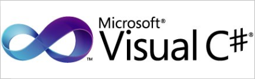
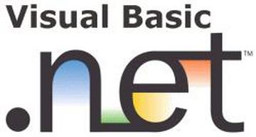
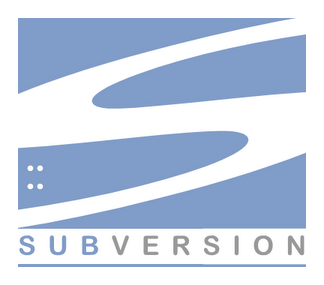
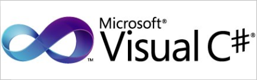
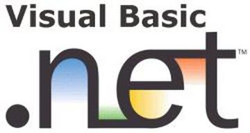
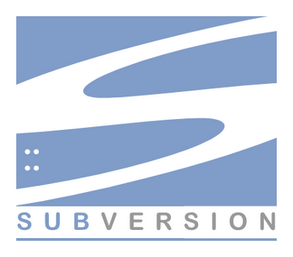

I am currently employed at NexgenRx as a Junior Technical Analyst in the IT department. I have dealt a great deal with SQL/Server Reporting Services (SSRS) and Integration Services (SSIS). I worked with developing, maintaining and testing stored procedures and tables. With the data in our databases, I have developed reports to match many different client requests. I perform daily tasks so that I can troubleshoot any errors in our system. I have coded projects in Visual Basic 6 and Visual Studios(C# and vb.net) in order to automate reports and to build applications for multiple different purposes.
NexgenRx has taught me a great deal about working with other programmers and feeding off of each other's ideas. They have improved my ability to follow the software design process and to ensure that each piece of code is quality tested with a rollback if we ever need to return to a previous version. Finally, I have learned a lot about project management. I always have multiple projects at a time with different priorities and different deadlines. I have had much experience in managing these projects in an clear and efficient manner to produce high quality work.
Some of my responsibilities and tasks at Nexgen Rx:
 




